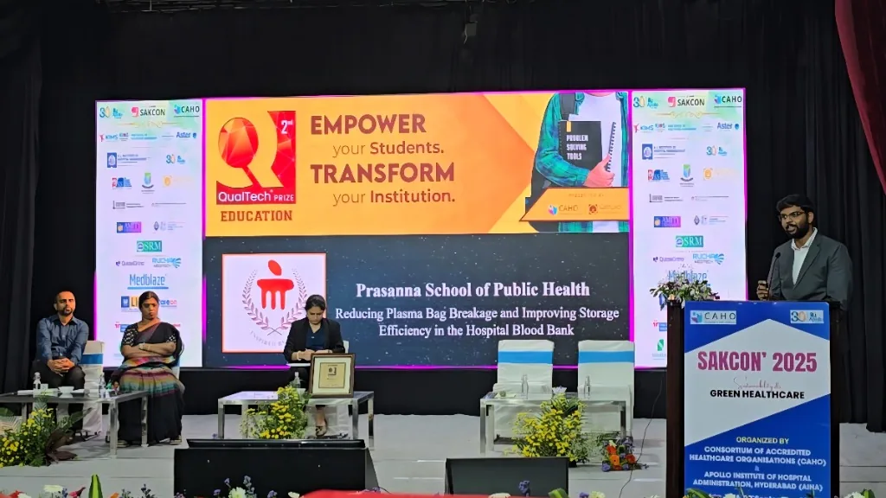

Presenting on stage at SAKCON 2025, Hyderabad — National QualTech® Prize Winner
The Blood Bank Problem & The ₹3 Box
Winning the National QualTech Prize by solving plasma bag breakage at sub-zero storage with practical physical engineering.
The Problem at -50°C
In the blood bank, fresh frozen plasma is stored deep: somewhere between -30°C and -60°C.
The units were wrapped in loose plastic film or bubble wrap and stacked in racks inside the deep freezers. Under their own weight and the sub-zero cold, they froze into irregular, distorted shapes. The frost developed inside the freezers themselves—ice built up and frozen condensation droplets coated the plastic. When staff pulled a unit out into a 28°C room, the thermal shock caused immediate melting. The frost turned into a wet, slick surface over glass-brittle, sub-zero plastic.
That created a severe operational failure point:
- You couldn't read the blood group through the frost, and the barcodes wouldn't scan.
- Staff had to strip off the wrap, physically scrape or wipe ice off the frozen bag, and manually sort units across room-temperature tables before taking them to the warm water bath.
- Because the thawing bags were slippery and uneven, drops happened regularly during sorting and transit.
The blood bank was losing around 28 bags every single month. In healthcare, rare blood groups like AB-negative cannot be easily replaced. Beyond the loss of donated blood, there was the wasted hospital time: hours spent freezing units, man-hours spent cleaning biohazardous spills, and staff repeating manual sorting routines.
The Physical Engineering
Instead of asking staff to "be more careful," we treated this as a physical engineering and packaging problem. We designed a custom, slim cassette box with four specific functional constraints:
- Zero Volume Waste: The box adds just half an inch of overhead clearance to the bag, keeping deep freezer rack capacity completely intact.
- Anti-Frost Surface: A surface coating on the box prevents ice and condensation crystals from adhering to the exterior.
- Direct Scan Cutout: A precision window aligned over the label allows optical barcode scanners to read the unit immediately without staff having to open the box or touch the cold bag.
- Color-Coded Visual Sorting: The boxes are colored by blood group. Sorting happens visually right at the freezer rack door, eliminating the need to pile frozen units onto room-temperature tables.
The Economics & Result
Disposable plastic films cost roughly ₹1.60 to ₹1.80 each, got soaked during thawing, and were discarded after a single use. Our box cost roughly ₹2.80 to ₹3.00 to manufacture, but because it stayed dry and intact, it was reusable two to three times. It was cheaper per cycle than disposable wrap while solving the breakage problem at its source.
We ran extensive pilot trials in the deep freezers to verify that thermal conductivity and freezing curves remained completely uncompromised. Once deployed, bag breakage dropped by 95%, saving ₹2.6 Lakhs annually in direct costs and removing dozens of hours of stressful cleanup and sorting for hospital staff.
At SAKCON in Hyderabad, the Qimpro Foundation awarded the project the National QualTech Prize, specifically commending it as a low-cost, practical physical solution rather than an abstract academic exercise.